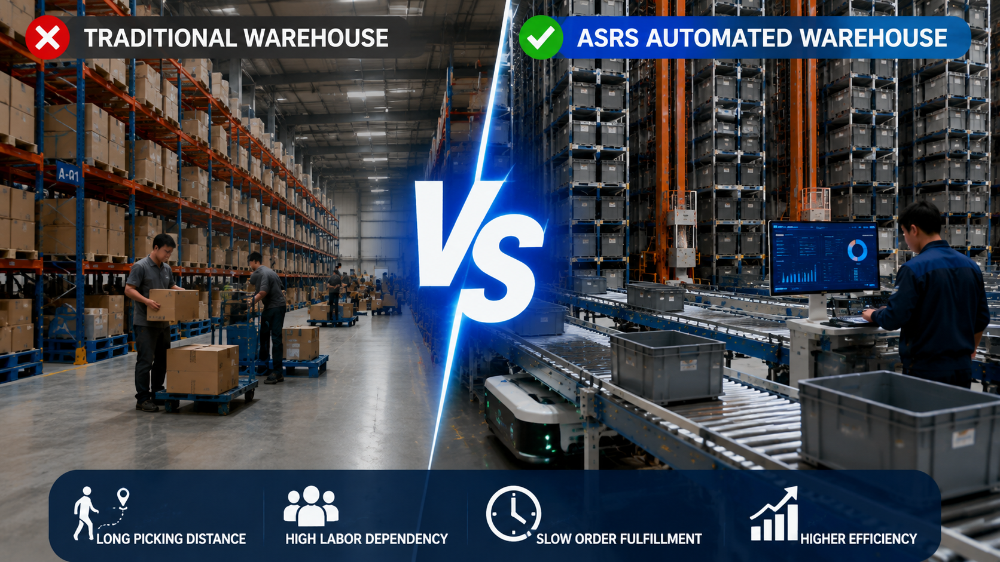

Mini Load ASRS vs Traditional Warehouse: Why High SKU Warehouses Are Moving Toward Automation

Summary
Why High SKU Warehouses Need a New Automation Strategy
As businesses continue to expand product categories and manage thousands of SKUs, traditional warehouse models are facing increasing operational pressure.
Manual warehouses can work effectively for small-scale operations, but when companies require:
Higher storage capacity
Faster order fulfillment
More accurate inventory control
Lower operational dependency
traditional warehouse processes become difficult to scale.
Mini Load ASRS (Automated Storage and Retrieval System) provides a new approach by combining automated storage, intelligent retrieval, and goods-to-person picking technology.
The goal of warehouse automation is not simply to replace workers.
The real purpose is to improve:
Warehouse productivity
Operational stability
Inventory visibility
Business competitiveness
Technology
- Mini Load ASRS Automated Warehouse Technology
- Mini Load ASRS is an automated storage solution designed for high SKU warehouses that require efficient storage and frequent picking operations.
- The system integrates:
- Automated bin storage racks
- High-speed stacker cranes
- Conveyor transportation systems
- Goods-to-person picking stations
- Warehouse management software
- Warehouse control systems
- Compared with traditional manual warehouse operations
- Mini Load ASRS changes the warehouse operation model from:
- Person-to-goods picking
- ↓
- Goods-to-person picking
- This reduces unnecessary movement and improves warehouse efficiency.
Challenge
Why Traditional Warehouses Struggle with High SKU Operations
Traditional warehouses have supported manufacturing, retail, and logistics operations for many years.
However, as businesses grow, warehouse requirements are becoming more complex.
Companies need to manage:
More product categories
More frequent orders
Faster delivery expectations
Higher inventory accuracy requirements
For high SKU environments, traditional warehouse models often face several challenges.
Low Storage Density
Traditional warehouse layouts usually require large areas for:
Storage aisles
Operator movement
Manual handling
This limits the ability to maximize warehouse space.
As inventory increases, companies often need to expand warehouse areas, increasing operational costs.
Long Picking Distance
In traditional warehouses, workers usually need to walk to storage locations to collect products.
The process includes:
Order received
↓
Worker searches location
↓
Worker walks to storage area
↓
Product picked manually
↓
Order processed
For warehouses with thousands of SKUs, this creates significant time consumption.
High Labor Dependency
Manual warehouse operations rely heavily on human resources.
Companies need employees for:
Product searching
Storage handling
Picking operations
Inventory checking
As labor costs increase, maintaining efficiency becomes more challenging.
Slow Order Fulfillment
Modern customers expect faster delivery.
Traditional warehouse processes may struggle with:
Increasing order volume
Multiple SKU orders
Short delivery cycles
This limits business expansion.
Solution
Mini Load ASRS Automated Warehouse Solution
Mini Load ASRS provides a different warehouse operation model by combining automated storage, intelligent control, and efficient picking processes.
The solution focuses on improving overall warehouse performance rather than only reducing labor.
Higher Storage Utilization
Mini Load ASRS uses vertical warehouse space effectively.
The system allows companies to store more products within the same warehouse area.
Benefits include:
Reduced warehouse expansion requirements
Better space utilization
Higher inventory capacity
Goods-to-Person Picking
Instead of workers searching for products, the automated system delivers required bins directly to operators.
The process becomes:
Order received
↓
System identifies product location
↓
Stacker crane retrieves bin
↓
Bin delivered to picking station
↓
Operator completes picking
This significantly reduces unnecessary walking and improves efficiency.
Faster Order Processing
Automated storage and retrieval systems operate continuously.
Advantages include:
Faster product retrieval
Shorter order processing time
More stable warehouse operation
Digital Inventory Control
Mini Load ASRS can integrate with warehouse management systems.
The system provides:
Real-time inventory visibility
Accurate product tracking
Automated storage records
Better warehouse decision-making
Workflow & Layout
Automated Warehouse Operation Flow
A typical Mini Load ASRS workflow includes:
Receiving Area
Products enter the warehouse and are registered into the warehouse management system.
↓
Identification and Storage Assignment
The system analyzes:
Product information
Storage requirements
Warehouse location
↓
Automated Storage
Stacker cranes automatically move bins to assigned storage positions.
↓
Order Processing
Customer orders are received by the warehouse system.
↓
Automatic Retrieval
Required bins are retrieved automatically from storage.
↓
Goods-to-Person Picking
Products are delivered to operators at picking stations.
↓
Sorting and Shipping
Completed orders move to sorting and outbound areas.
Results & ROI
- Business Improvements Through Warehouse Automation
- The value of Mini Load ASRS is reflected in long-term operational improvements.
- Improved Warehouse Productivity
- Automation enables faster storage and retrieval processes.
- Companies can handle increasing order volumes without simply adding more workers.
- Reduced Operational Dependency
- Automation reduces repetitive manual tasks and improves warehouse stability.
- Better Space Utilization
- High-density storage allows companies to maximize existing warehouse space.
- Improved Inventory Accuracy
- Digital warehouse control reduces manual recording errors.
- Stronger Business Scalability
- Automated warehouses provide a foundation for future growth.
- Companies can expand operations without completely redesigning warehouse processes.
Equipment List
- Main Components of Mini Load ASRS Solution
- The complete automated warehouse system may include:
- Mini Load ASRS Storage System
- Functions:
- Automated bin storage
- Automatic retrieval
- High-density inventory management
- High-Speed Stacker Crane
- Functions:
- Vertical movement
- Horizontal movement
- Precise bin handling
- Storage Rack System
- Functions:
- Supporting automated storage locations
- Maximizing warehouse space utilization
- Conveyor System
- Functions:
- Automated material transportation
- Connection between storage and picking areas
- Goods-to-Person Picking Station
- Functions:
- Efficient order picking
- Operator-product interaction
- WMS/WCS Software
- Functions:
- Inventory management
- Task scheduling
- Equipment coordination
Project Overview / Opening
Building a More Competitive Warehouse Through Automation
For companies managing high SKU inventories, warehouse efficiency has become a key factor affecting business competitiveness.
The question is no longer:
"Can we store more products?"
The real question is:
"Can we store, retrieve, and deliver products faster and more accurately than competitors?"
Mini Load ASRS helps companies transform traditional warehouse operations into intelligent automated systems.
By integrating storage, transportation, picking, and digital management, businesses can create a more efficient logistics foundation.
Key Points
- Why Companies Choose Mini Load ASRS
- Traditional warehouses become difficult to scale when SKU numbers increase.
- High SKU environments require better storage organization and faster access.
- Warehouse automation is not only about reducing labor.
- The main goal is improving:
- Efficiency
- Accuracy
- Speed
- Scalability
- Goods-to-person picking improves warehouse productivity.
- Operators spend less time searching and more time completing value-added tasks.
- Digital warehouse management creates better visibility.
- Companies gain more control over inventory and operations.
- Automation supports long-term business growth.
- A smart warehouse provides flexibility for future expansion.
Implementation / Workflow
How to Upgrade from Traditional Warehouse to Automated Warehouse
A successful warehouse automation project usually follows these steps:
Step 1: Analyze Current Warehouse Operations
Evaluate:
SKU quantity
Storage requirements
Order volume
Current operational problems
Step 2: Define Automation Goals
Determine:
Required storage capacity
Picking speed
Throughput requirements
Future expansion plans
Step 3: Design Automated Warehouse Solution
Develop:
Warehouse layout
ASRS configuration
Material flow design
Software integration plan
Step 4: System Integration
Integrate:
Storage system
Stacker cranes
Conveyors
Picking stations
Warehouse software
Step 5: Testing and Operation Support
Complete:
System testing
Performance verification
Operation training
Project delivery
Customer Value / Results
Creating Long-Term Warehouse Competitiveness
By adopting Mini Load ASRS automation, companies can achieve:
Higher Warehouse Efficiency
Automated processes improve storage and picking performance.
Lower Operating Pressure
Reduced manual dependence helps companies manage increasing workloads.
Better Customer Service
Faster order processing supports shorter delivery cycles.
Improved Management Capability
Digital systems provide better operational visibility.
Future-Proof Warehouse Infrastructure
Automation creates a scalable platform for business growth.
Conclusion / Next Step
Moving from Traditional Storage to Intelligent Warehouse Automation
Traditional warehouses remain suitable for simple storage requirements.
However, when companies face:
Thousands of SKUs
Increasing order frequency
Rising labor costs
Higher customer expectations
warehouse automation becomes a strategic investment.
Mini Load ASRS provides a practical solution for companies looking to improve efficiency, accuracy, and scalability.
13ASRS helps global customers design, integrate, and deliver automated warehouse projects through China's manufacturing ecosystem.
If you are planning a high SKU warehouse automation project, we can help evaluate:
Warehouse layout
Automation strategy
Mini Load ASRS configuration
Investment requirements
Contact us to discuss your customized automated warehouse solution.
SEO Title
Mini Load ASRS vs Traditional Warehouse: Why High SKU Warehouses Are Moving Toward Automation
SEO Description
Why High SKU Warehouses Need a New Automation Strategy
As businesses continue to expand product categories and manage thousands of SKUs, traditional warehouse models are facing increasing operational pressure.
Manual warehouses can work effectively for small-scale operations, but when companies require:
Higher storage capacity
Faster order fulfillment
More accurate inventory control
Lower operational dependency
traditional warehouse processes become difficult to scale.
Mini Load ASRS (Automated Storage and Retrieval System) provides a new approach by combining automated storage, intelligent retrieval, and goods-to-person picking technology.
The goal of warehouse automation is not simply to replace workers.
The real purpose is to improve:
Warehouse productivity
Operational stability
Inventory visibility
Business competitiveness
Related Blog
Start with Your Business Challenge
Tell us about your warehouse, factory, or production requirements. We'll help you explore practical automation solutions and relevant project references.